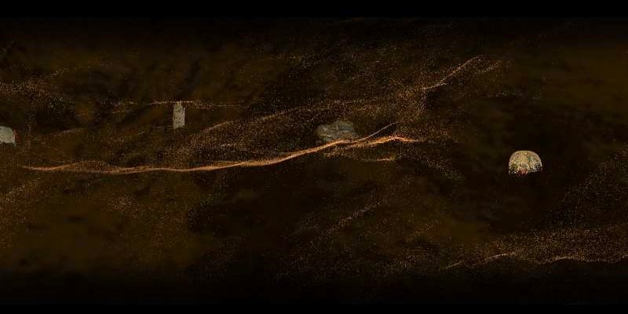
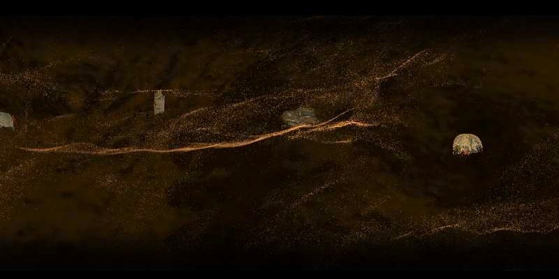

// Project Overview
2025.07
"Seven Days in Cad'ota: Xinjiang Niya Ruins
Immersive Exhibition" — An archaeological survey of the "Pompeii of the East" through
digital excavation.
Organized by the Xinjiang Museum and
ALIGHT ROOM at the Lafayette Culture and Arts Center, this exhibition
provides an immersive tour of the ancient city of Niya (Cad'ota). As part of the technical team, I was
responsible for the Unity programming and hardware integration for the "Sand Sea
Treasure Hunt" installation.
The experience utilizes physical flashlights equipped with
laser-tracking technology to drive real-time laser mapping across a
desert-like environment. By scanning the physical sand, visitors trigger digital shaders that reveal
100+ cultural relics—including the "Five Stars Rise in the East" brocade—buried beneath the dunes. This
interaction transforms the visitor into a digital archaeologist, using precise laser
mapping to bridge the gap between static museum archives and a prosperous Silk Road
civilization.
→ Exhibition Coverage (Meet in
Shanghai)
 
